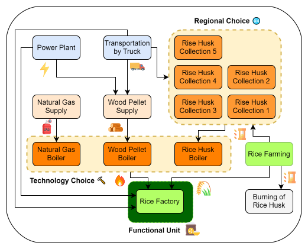
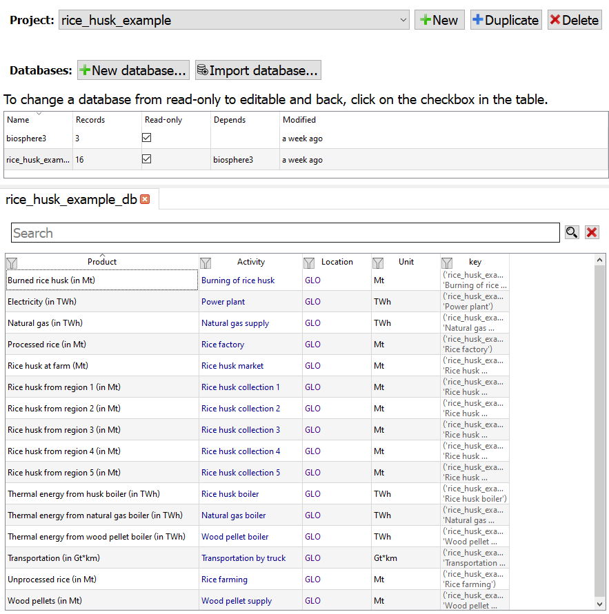
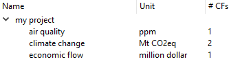

Rice Husk Example 🌾
This example is based on the following publication: Kätelhön et al. (2016). The original example used for introducing the TCM deals with a simultaneous technology 🔨 and regional 🌐 choice problem. It can also be solved with PULPO. The superstructure can be seen below:

Rice Example#
Problem Formulation#
The original problem formulation deals with an economic objective function, using factor constraints. With PULPO, the intention is to solve LCO problems with environmental objectives, but a function for economic factors could be considered for implementation as well, if data availability allows so.
Hence, the adapted problem formulation can be stated as follows:
Goal and Scope
Find the optimal system configuration, minimizing the global warming potential. First, in an unconstrained system.
📦 Functional Unit
For demonstration purposes, a final demand of 1 Mt of processed rice is specified.
🎯 Objective Function
Primary objective: Global warming potential (GWP).
🔄 Possible Choices
- Regional 🌐: (Rice husk collection 1 / Rice husk collection 2 / ... / Rice husk collection 5)
- Technology 🔨: (Rice husk boiler / Natural gas boiler / Wood pellet boiler)
⚙️ Additional Constraints
None.
Technosphere Matrix A#
In the Technosphere, new choices are added in a bottom-up fashion, extending the square matrix:
Biosphere Matrix B#
In the Biosphere, the corresponding elementary flows need to be added:
The final row for \(\textcolor{FireBrick}{\text{economic flows}}\) is derived from the factor requirements matrix and the factor price vector from the original example. Only the cost for natural gas has been lowered slightly (16 –> 13), to enforce the economic competitiveness of the NG boiler. Although integrating economic flows into the biosphere matrix is unconventional, this approach will later be useful for demonstrating a multi-objective trade-off assessment, without the need to introduce additional elements to account for economic impacts.
Characterization Factor Matrix Q#
The characterization factors are extended with a row for \(\textcolor{FireBrick}{\text{Cost (in million \$)}}\):
The whole system can be explored in activity-browser:


Resolution with PULPO 🐙
Import the necessary libraries
from pulpo import pulpo
import os
import sys
import plot_functions
import numpy as np
np.NaN = np.nan
import pandas as pd
import copy
Set the project, database and method (objective function). In this example, the rice husk case study is used, which can be installed via a PULPO function (install_rice_husk_db).
pulpo.install_rice_husk_db()
project = "rice_husk_example"
database = "rice_husk_example_db"
method = "('my project', 'climate change')"
Substitute with your working directory of choice. This directory will be used to store the results.
notebook_dir = os.path.dirname(os.getcwd())
directory = os.path.join(notebook_dir, 'data')
Create a PulpoOptimizer instance. This class is used to interact with the LCI database and solve the optimization problem. It is specified by the project, database, method and directory.
pulpo_worker = pulpo.PulpoOptimizer(project, database, method, directory)
Import LCI data. After initializing the PulpoOptimizer instance, the LCI data is imported from the database.
pulpo_worker.get_lci_data()
Specify the functional unit. In this case, the functional unit is 1 Mt of processed rice. PULPO implements a search function (retrieve_processes) to find the processes that match the specified reference products (alternatively: keys, process name, region).
rice_factory = pulpo_worker.retrieve_processes(reference_products='Processed rice (in Mt)')
demand = {rice_factory[0]: 1}
Specify the choices. Here, the choices are regional 🌐 choices for rise husk collections, and technological ⛏ choices for boiler type selection.
The auxiliar choices are needed to resolve the issue that rice, when not used in the boiler must be burned instead.
(At this point, just accept. If you are curious about how this multi-functionality is technically adressed, refer to the paper, or reach out.)
## Rise husk collection
rice_husk_processes = ["Rice husk collection 1",
"Rice husk collection 2",
"Rice husk collection 3",
"Rice husk collection 4",
"Rice husk collection 5",]
rice_husk_collections = pulpo_worker.retrieve_processes(processes=rice_husk_processes)
## Boilers
boiler_processes = ["Natural gas boiler",
"Wood pellet boiler",
"Rice husk boiler"]
boilers = pulpo_worker.retrieve_processes(processes=boiler_processes)
## Auxiliar (Ignore for now!)
auxiliar_processes = ["Rice husk market",
"Burning of rice husk"]
auxiliar = pulpo_worker.retrieve_processes(processes=auxiliar_processes)
## Combine to create the choices dictionary
## For each kind of choice, assign a 'label' (e.g. 'boilers')
## To each possible choice, assign a process capacity. In the 'unconstrained' case, set this value very high (e.g. 1e10, but depends on the scale of the functional unit)
choices = {'Rice Husk (Mt)': {rice_husk_collections[0]: 1e10,
rice_husk_collections[1]: 1e10,
rice_husk_collections[2]: 1e10,
rice_husk_collections[3]: 1e10,
rice_husk_collections[4]: 1e10},
'Thermal Energy (TWh)': {boilers[0]: 1e10,
boilers[1]: 1e10,
boilers[2]: 1e10},
'Auxiliar': {auxiliar[0]: 1e10,
auxiliar[1]: 1e10}}
Instantiate and solve the optimization model
pulpo_worker.instantiate(choices=choices, demand=demand)
results = pulpo_worker.solve()
Save and summarize the results
pulpo_worker.save_results(choices=choices, demand=demand, name='rice_example_unconstrained.xlsx')
pulpo_worker.summarize_results(choices=choices, demand=demand, zeroes=True)
It can be seen that, in the unconstrained case minimizing the GWP, the optimal solution is to use the rice husk boiler and the rice husk collection 1. The minimum GWP is 0.859 Mt CO2-eq per Mt of processed rice. Let us store the relevant results:
So far, we said that the case is unconstrained. This means that we don’t consider any relevant capacity constraints on any of the processes. Let’s now move to the constrained case!
Constrained Case 🔏
We will consider three different simple constrained cases:

Choice Capacity Constraints ↔#
⚙️ Additional Constraints
Add a constraint to the rice husk collection of 0.03 Mt per zone.
choices_constrained = copy.deepcopy(choices)
choices_constrained['Rice Husk (Mt)'] = {rice_husk_collections[0]: 0.03,
rice_husk_collections[1]: 0.03,
rice_husk_collections[2]: 0.03,
rice_husk_collections[3]: 0.03,
rice_husk_collections[4]: 0.03}
Repeat the solution steps …
pulpo_worker.instantiate(choices=choices_constrained, demand=demand)
results = pulpo_worker.solve()
pulpo_worker.summarize_results(choices=choices_constrained, demand=demand, zeroes=True)
When constraints are specified on the availability of rice husk, the optimizer chooses to use all the available rice husk that can be transported from every zone. The remaining thermal energy is provided by the wood pellet boiler.
Upper Limits ⬆#
Upper limits can be enforced as well on processes that are not part of the choices. This can be done using the upper_limit parameter in the instantiate method. Let’s see an example, where we limit the transportation process to 0.37 Gt*km (This value has no rational meaning, and is just an example to demonstrate the upper limit functionality):
⚙️ Additional Constraints
Add a constraint of 0.37 Gt*km to the availability of transportation.
# Retrieve the transport process
transportation = pulpo_worker.retrieve_processes(processes=["Transportation by truck"])
upper_limit = {transportation[0]: 0.37}
Repeat the solution steps, specifying now the “upper_limit” parameter during instantiation …
pulpo_worker.instantiate(choices=choices_constrained, demand=demand, upper_limit=upper_limit)
results = pulpo_worker.solve()
pulpo_worker.summarize_results(choices=choices_constrained, demand=demand, zeroes=True)
It can be seen that the optimizer chooses to source rice husk from zones 1-3 and the remaining demand for thermal heat is supplied by the wood pellet boiler.
Upper Limit on Wood Pellet Boiler#
⚙️ Additional Constraints
Add a constraint of 0.1 Mt to the supply of wood pellets.
wood_pellet_supply = pulpo_worker.retrieve_processes(processes=["Wood pellet supply"])
upper_limit = {wood_pellet_supply[0]: 0.1}
pulpo_worker.instantiate(choices=choices_constrained, demand=demand, upper_limit=upper_limit)
results = pulpo_worker.solve()
pulpo_worker.summarize_results(choices=choices_constrained, demand=demand, zeroes=True)
Summary of Cases:#
plot_functions.plot_cases()
Final Demand Variation 📦
In this section, we are varying the final demand and observe the consequence on the total GWP impact, as well as the technology and regional composition.
The following code performs a loop over various demand values ranging from 0.05 Mt to 1.00 Mt of rice.
Disclaimer:
The syntax used here to access the internal variables of the optimization problem is not as intuitive and requires profound knowledge of the data structures of PULPO (e.g., the process map). We are working on simplifying this, to make it easier for users to access these variables outside the “summarize” and “save” functions.
📦 Functional Unit
A final demand range of 0.05 to 1.00 Mt of processed rice is specified.
# List of final demand values
final_demand_values = [i * 0.05 for i in range(1, 21)]
# Define the entries to be analysed
process_map = pulpo_worker.lci_data['process_map']
boilers = ['Natural gas boiler', 'Wood pellet boiler', 'Rice husk boiler']
zones = [f'Rice husk collection {i}' for i in range(1, 6)]
# Mapping process IDs
boiler_ids = [process_map[('rice_husk_example_db', boiler)] for boiler in boilers]
zone_ids = [process_map[('rice_husk_example_db', zone)] for zone in zones]
# Initialize results dictionary
results_list = {
'demand': [],
'impact': [],
'natural_gas_boiler': [],
'wood_pellet_boiler': [],
'rice_husk_boiler': [],
**{f'rice_husk_zone_{i}': [] for i in range(1, 6)}
}
for demand_value in final_demand_values:
# Set the demand for processed rice
demand_dict = {rice_factory[0]: demand_value}
# Instantiate and solve the optimization model
pulpo_worker.instantiate(choices=choices_constrained, demand=demand_dict, upper_limit=upper_limit)
results = pulpo_worker.solve()
print()
# Append the results to the list
results_list['demand'].append(demand_value)
results_list['impact'].append(pulpo_worker.instance.OBJ())
# Normalize and append boiler results
total_boilers = sum(pulpo_worker.instance.scaling_vector[i].value for i in boiler_ids)
for boiler, boiler_id in zip(boilers, boiler_ids):
results_list[boiler.lower().replace(' ', '_')].append(
pulpo_worker.instance.scaling_vector[boiler_id].value / total_boilers
)
# Normalize and append zone results
total_zones = sum(pulpo_worker.instance.scaling_vector[i].value for i in zone_ids)
for i, zone_id in enumerate(zone_ids, start=1):
results_list[f'rice_husk_zone_{i}'].append(
pulpo_worker.instance.scaling_vector[zone_id].value / total_zones
)
# Convert the results_list dictionary to a pandas DataFrame
results_df = pd.DataFrame(results_list)
Plot the results in a bar chart. While this approach works, the visualization of results could benefit from standardized plots, which we are planning to implement. Currently, users need to manually extract the relevant values and create the visualizations that best meet their needs.
plot_functions.plot_demand(results_df)
Multi-Objective / Trade-off 🎯
In this section, we will first optimize the system using the \(\textcolor{FireBrick}{\text{economic flows}}\) as objective, and then analyse the trade-off. To that end, we will create a new pulpo_worker, which imports both impact categories. For now, we specify a weight of 0 for the environmental and a weight of 1 for the economic objective:
🎯 Objective Function
Primary objective: Cost.
methods = {"('my project', 'climate change')": 0, "('my project', 'economic flow')": 1}
pulpo_worker_multi = pulpo.PulpoOptimizer(project, database, methods, directory)
pulpo_worker_multi.get_lci_data()
With the worker created, we can proceed to instantiate and solve the problem, now with the economic objective function:
pulpo_worker_multi.instantiate(choices=choices_constrained, demand=demand, upper_limit=upper_limit)
results = pulpo_worker_multi.solve()
pulpo_worker_multi.summarize_results(choices=choices, demand=demand, zeroes=True)
As anticipated, the natural gas option minimizes costs (0.56 $/kg processed rice). However, this cost reduction leads to a significant increase in the climate change impact (1.20 → 1.60 kg CO2e/kg processed rice). Given these trade-offs, how does the Pareto front appear? For that purpose, we are going to use the epsilon-constrained method, constraining the environmental objective between the values corresponding to the environmental optimum and the economic optimum:
lower_impact = pulpo_worker.instance.impacts["('my project', 'climate change')"].value
upper_impact = pulpo_worker_multi.instance.impacts_calculated["('my project', 'climate change')"]
epsilon_list = np.linspace(lower_impact, upper_impact, num=5)
Indicator constraints can be specified in PULPO using the upper_imp_limit parameter of the instantiate function, as can be seen in the loop below:
🎯 Objective Function
Primary objective: Cost.
Secondary objective: Global warming potential (GWP) --> Constrainted in relevant range via "upper_imp_limit".
# Initialize an empty list to store the Pareto front data
pareto_front = []
gw_category = "('my project', 'climate change')"
ef_category = "('my project', 'economic flow')"
for epsilon in epsilon_list:
# Adjust the internal objective weights
epsilon_constraint = {"('my project', 'climate change')": epsilon}
pulpo_worker_multi.instantiate(choices=choices_constrained, demand=demand, upper_limit=upper_limit, upper_imp_limit=epsilon_constraint)
results = pulpo_worker_multi.solve()
# Calculate the impacts
impacts = {x: pulpo_worker_multi.instance.impacts[x].value for x in pulpo_worker_multi.instance.impacts}
# Save the impacts in the Pareto front list (cost divided by 1000)
pareto_front.append((impacts[ef_category]/1000, impacts[gw_category]))
# Print the impacts for each iteration
print(f"Cost [$/kg processed rice]:{impacts[ef_category]/1000}")
print(f"GWP [kg CO2-eq/kg processed rice]: {impacts[gw_category]}")
print()
plot_functions.plot_pareto(pareto_front)
This type of (constrained) trade-off assessment highlights the inherent compromises involved in designing a production system with multiple criteria. In this example, the two extreme points (known as anchor points) demonstrate that a significant reduction in GWP (from 1.60 to 1.25 kg CO2-eq) can be achieved with only a slight increase in cost (from 0.560 to 0.566 $). The Pareto front, defined by the 10 points shown, illustrates how balanced solutions can be realized.
Internal Constraint due to Multi-Functionality
Following the notion highlighted at the end of the previous section, let’s investigate what happens if more thermal energy is required than the one that can be provided by the rice husk. This is done by adding another demand for the functional unit:
📦 Functional Unit
A final demand range of 1.00 Mt of processed rice is specified, in addition to 10 TWh of thermal energy.
demand_thermal = {rice_factory[0]: 1,
'Thermal Energy (TWh)': 10}
pulpo_worker.instantiate(choices=choices, demand=demand_thermal)
results = pulpo_worker.solve()
pulpo_worker.summarize_results(choices=choices, demand=demand_thermal, zeroes=True)
As can be seen from the choices made by the optimizer, the rice husk boiler is used to its full capacity, conditioned by the demand for rice:
The rest of the thermal energy is provided by the wood pellet boiler.